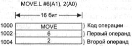
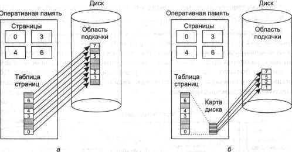
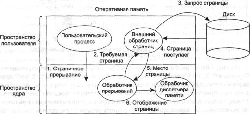

Вопросы реализации
Разработчики систем виртуальной памяти должны сделать выбор между основными
теоретическими алгоритмами: «вторая попытка» или «старение»,
локальное распределение страниц или глобальное, предоставление страниц по запросу
или опережающая подкачка страниц. Но они также должны быть осведомлены о количестве
проблем, возникающих при практической реализации каждого варианта. В этом разделе
мы рассмотрим несколько наиболее общих вопросов и некоторые из их решений.
Участие операционной системы в процессе подкачки страниц
Можно выделить четыре ситуации, в которых операционной системе приходится выполнять
работу, относящуюся к страничной подкачке: создание процесса, выполнение процесса,
страничное прерывание и завершение процесса. Сейчас мы кратко рассмотрим каждую
из этих ситуаций по очереди, чтобы понять, что должно быть сделано в каждом
случае.
При создании нового процесса в системе со страничной организацией памяти
операционная система должна определить, насколько будут велики программа и данные
к ней (в исходном состоянии), и создать для них таблицу страниц. Для таблицы
страниц должно быть предоставлено пространство в памяти, и ее нужно проинициализировать.
Таблица страниц не обязана быть резидентной в то время, когда процесс выгружается
на диск, но она должна быть в памяти, пока процесс работает. Кроме того, в области
подкачки на диске должно быть выделено пространство, чтобы в момент выгрузки
страницы на диск было бы место, куда ее можно поместить. Область подкачки также
нужно инициализировать текстом программы и данными, чтобы, когда новый процесс
запустится, вызывая страничные прерывания, страницы можно было подгрузить с
диска. Некоторые системы подкачивают страницы текста программы прямо из исполняемого
файла, таким образом, экономя время инициализации и место на диске. Наконец,
информация о таблице страниц и области подкачки на диске должна быть записана
в таблицу процесса.
Когда процесс планируется для исполнения, для нового процесса требуется сброс
диспетчера памяти (MMU), а содержимое буфера быстрого преобразования адреса
(TLB) должно быть очищено, чтобы избавиться от следов предыдущего процесса.
Таблицу страниц нового процесса нужно сделать текущей, обычно это производится
путем копирования ее или указателя на нее в некоторый аппаратный регистр (регистры).
Часть страниц процесса или они все могут быть считаны в память, чтобы уменьшить
изначальное количество страничных прерываний.
Когда происходит страничное прерывание, операционная система должна прочитать
аппаратные регистры, чтобы определить, какой виртуальный адрес вызвал ошибку.
Из полученной информации она должна вычислить, какая требуется страница, и определить
ее местоположение на диске. Затем операционной системе нужно найти доступный
страничный блок для размещения новой страницы, при необходимости она выгружает
какую-либо старую страницу. После этого операционная система должна считать
требуемую страницу в страничный блок. И наконец, она должна вернуть в предыдущее
состояние счетчик команд, чтобы тот указывал на вызвавшую прерывание инструкцию,
и запустить эту команду заново.
Когда процесс завершается, операционная система должна освободить его таблицу
страниц, его страницы и дисковое пространство, которое занимают страницы, когда
они находятся на диске. Если некоторые из страниц разделяются между несколькими
процессами, страницы в памяти и на диске могут быть освобождены только тогда,
когда окончит работу последний использующий их процесс.
Обработка страничного прерывания
Наконец мы подошли к моменту, когда можно более детально описать, что же происходит
при страничном прерывании. Последовательность действий следующая:
1. Аппаратное обеспечение переключает систему в режим ядра, сохраняя счетчик
команд в стеке. На большинстве машин в специальных регистрах процессора сохраняется
некоторая информация о состоянии текущей инструкции.
2. Запускается написанная на ассемблере программа, сохраняющая основные регистры
и другую изменяющуюся информацию, защищая ее от разрушения операционной системой.
Эта программа вызывает операционную систему как процедуру.
3. Операционная система обнаруживает, что произошло страничное прерывание,
и пытается найти необходимую виртуальную страницу. Часто требуемую информацию
содержит один из аппаратных регистров. Если нет, операционная система должна
достать из стека счетчик команд, выбрать инструкцию и программно проанализировать
ее, чтобы определить, что она делала в тот момент, когда случилась ошибка.
4. Как только становится известен виртуальный адрес, вызвавший прерывание,
система проверяет, имеет ли силу этот адрес и согласуется ли защита с доступом.
Если нет, то процессу посылается сигнал или процесс уничтожается. Если адрес
действителен и не произошло ошибки защиты, система проверяет наличие свободных
страничных блоков. Если свободных блоков нет, запускается алгоритм замещения
страниц, выбирающий жертву.
5. Если выбранный страничный блок «грязный», страница заносится
в график записи на диск и происходит переключение контекста, приостанавливающее
вызвавший прерывание процесс и позволяющее работать другому процессу до тех
пор, пока не будет выполнен перенос страницы на диск. В любом случае блок отмечается
как занятый, чтобы предотвратить его использование в других целях.
6. Как только страничный блок очищается (или немедленно, или после записи
на диск), операционная система ищет адрес на диске, где находится требуемая
страница, и планирует дисковую операцию для ее переноса в память. Во время загрузки
страницы процесс, вызвавший прерывание, все еще приостановлен и выполняется
другой пользовательский процесс, если такой доступен.
7. Когда дисковое прерывание отмечает, что страница поступила в память, обновляется
таблица страниц, отражая ее позицию, а блок помечается, как находящийся в нормальном
состоянии.
8. Прерванная команда возвращается к тому состоянию, с которого она начиналась,
и значение счетчика команд приостановленного процесса (в стеке или в системной
ячейке памяти) корректируется так, чтобы указывать на эту команду.
9. Прерванный процесс вносится в график, и операционная система возвращает
управление ассемблерной процедуре, вызывавшей ее.
10. Эта процедура перезагружает регистры и другую информацию о состоянии
и возвращает управление в пользовательское пространство для продолжения выполнения
пользовательской программы, как если бы никакого прерывания не происходило.
Перезапуск прерванной команды процессора
Когда программа обращается к странице, которой нет в памяти, команда процессора,
вызвавшая прерывание, останавливается на полпути, и происходит прерывание с
передачей управления операционной системе. После того как операционная система
перенесла в память необходимую страницу, она должна перезапустить команду, вызвавшую
прерывание. Это проще сказать, чем сделать.
Чтобы увидеть суть данной проблемы в черном цвете, рассмотрим центральный
процессор, в который поступила команда с двумя адресами, например процессор
Motorola 680x0, широко используемый во встроенных системах. Команда
MOVE.L #6(А1),2(А0)
занимает 6 байт (рис. 4.30). Для того чтобы перезапустить ее, операционная
система должна определить, где находится первый байт команды. Значение счетчика
команд во время прерывания зависит от того, какой операнд вызвал ошибку, и от
реализации микрокода процессора.
На рис. 4.30 у нас есть команда, начинающаяся с адреса 1000, которая совершает
три обращения к памяти: само слово команды и два сдвига для операндов. В зависимости
от того, какое из этих трех обращений к памяти вызывает страничное прерывание,
счетчик команд может принять значение 1000, 1002 или 1004 во время прерывания.
Зачастую операционная система не в силах однозначно определить, где начиналась
команда. Если в момент прерывания счетчик команд равен 1002, у операционной
системы нет способа определить, является ли слово по адресу 1002 адресом памяти,
связанным с командой по адресу 1000 (то есть операндом) или кодом операции самой
команды.

Рис. 4.30. Команда, вызвавшая страничное прерывание
Какой бы неприятной ни была данная проблема, могло бы быть гораздо хуже.
У процессора 680x0 есть очень удобные для программистов автоинкрементные режимы
адресации, а это означает, что побочным эффектом выполнения команды является
увеличение (или уменьшение) одного или двух регистров. Инструкции, использующие
автоинкрементный режим, также могут прерываться. В зависимости от деталей микропрограммы
приращение может быть сделано до обращения к памяти, и в этом случае операционная
система должна уменьшить регистр программно перед тем, как запустить команду
заново. Автоматическое приращение может выполняться и после обращения к памяти,
в этом случае оно еще не было сделано в момент прерывания и не должно отменяться
операционной системой. Также существует режим автоматического уменьшения на
единицу, и он вызывает ту же самую проблему. Точные детали того, выполнялось
автоувеличение или автоуменьшение регистра до или после обращений к памяти,
могут различаться для разных команд и для различных моделей процессоров.
К счастью, на некоторых машинах разработчики центральных процессоров предусматривают
решение этой проблемы обычно в форме скрытых внутренних регистров, в которые
копируется счетчик команд перед выполнением каждой инструкции. Такие машины
также могут иметь второй регистр, говорящий о том, какой из регистров и на сколько
уже был увеличен или уменьшен. Обладая этой информацией, операционная система
в силах однозначно отменить все эффекты прерванной инструкции, так что потом
ее можно целиком запустить заново. Если эта информация недоступна, операционной
системе придется покрутиться, чтобы понять, что же случилось и как это исправить.
Видимо, разработчики аппаратуры не смогли решить эту проблему, поэтому они опустили
руки и предоставили возможность разбираться с этим разработчикам операционных
систем. Славные парни.
Блокирование страниц в памяти
Хотя в этой главе мы практически не вспоминали о вводе-выводе, тот факт, что
компьютер имеет виртуальную память, вовсе не означает, что ввод-вывод отсутствует.
Виртуальная память и ввод-вывод незаметно взаимодействуют друг с другом. Рассмотрим
процесс, который только что сделал системный вызов, чтобы считать информацию
из некоторого файла или устройства в буфер внутри своего адресного пространства.
Пока процесс ожидает завершения операции ввода-вывода, он приостанавливается,
предоставляя возможность работы другому процессу. Этот другой процесс вызывает
страничное прерывание.
Если алгоритм подкачки страниц — глобальный, существует маленький, но не
равный нулю шанс, что страница, содержащая буфер ввода-вывода, будет выбрана
для удаления из памяти. Если устройство ввода-вывода в данный момент находится
в процессе выполнения прямой передачи данных в эту страницу, ее удаление станет
причиной записи части данных в буфер, которому они принадлежат, а часть данных
запишется в заново загруженную страницу. Одно решение этой проблемы заключается
в том, чтобы блокировать страницы, занятые вводом-выводом, так чтобы они не
удалялись из памяти. Блокирование страницы часто называется пришпиливанием
(pinning) ее в памяти. Другое решение — это сначала выполнить весь ввод-вывод
в буферы ядра, а затем копировать данные в пользовательские страницы.
Хранение страничной памяти на диске
В ходе рассмотрения алгоритмов замещения страниц мы видели, как выбирается страница
для удаления. Мы почти ничего не сказали о том, в какое место на диске она помещается
после выгрузки из памяти. Теперь настало время описать некоторые из проблем,
связанных с управлением дисками.
Простейший алгоритм для распределения страничного пространства на диске заключается
в поддержке специальной области подкачки (свопинга) на диске. При загрузке системы
эта область является пустой и представляется в памяти единой записью, имеющей
свой начальный адрес и размер. Когда запускается первый процесс, резервируется
участок области подкачки размером с этот процесс, а остальная область уменьшается
ровно на это количество. Как только запускаются новые процессы, им предоставляются
участки области подкачки, равные по размеру их образам памяти. Как только они
завершаются, их дисковое пространство освобождается. Область подкачки управляется
как список свободных участков.
С каждым процессом связывается адрес его области подкачки на диске, который
хранится в таблице процесса. Вычисление адреса для записи страницы становится
простым: всего лишь прибавляется смещение страницы внутри виртуального адресного
пространства к адресу начала области подкачки. Однако перед тем, как процесс
может начать работу, область подкачки должна быть инициализирована. Это можно
сделать, копируя полный образ процесса в область подкачки так, чтобы его по
необходимости можно было переносить в память. Второй способ: загрузить
весь процесс в память и позволить ему постранично выгружаться на диск,
также когда это требуется.
Но в такой простой модели есть одна проблема: процессы могут увеличиваться
в размере после запуска. Хотя текст программы обычно фиксирован, иногда может
расти область данных и всегда может увеличиваться стек. Следовательно, стратегия,
заключающаяся в резервировании отдельных областей подкачки для текста, данных
и стека и позволении каждой из этих областей состоять более чем из одного участка
на диске, может оказаться более удачной.
Другая крайность состоит в том, чтобы, наоборот, ничего не размещать заранее;
предоставлять пространство на диске для каждой страницы, когда она выгружается
на диск, и освобождать это место, когда она подкачивается обратно в память.
При таком подходе процессы в памяти не привязаны к какому-либо пространству
подкачки на диске. Его недостаток состоит в том, что адрес на диске, необходимый
в памяти, отслеживается для каждой страницы на диске. Другими словами, для каждого
процесса должна поддерживаться таблица, содержащая местоположение каждой страницы
на диске. Эти два альтернативных варианта показаны на рис. 4.31.

Рис. 4.31. Постраничная подкачка в статическую область свопинга (а);
динамическое резервирование страниц (б)
На рис. 4.31, а продемонстрирована таблица страниц с восемью страницами.
Страницы 0, 3, 4 и 6 находятся в оперативной памяти. Страницы 1, 2, 5 и 7 хранятся
на диске. Область подкачки на диске равна по размеру виртуальному адресному
пространству процесса (восемь страниц), причем у каждой страницы есть фиксированное
место, куда она записывается при удалении из оперативной памяти. Вычисление
ее адреса требует информации только о том, где начинается область страничной
подкачки процесса на диске, так как страницы хранятся в ней последовательно
в порядке своих виртуальных номеров. Страницы, находящиеся в памяти, всегда
имеют дубликат на диске, но эта копия может быть устаревшей, если страница была
изменена с момента загрузки в память.
На рис. 4.31, б страницы не имеют фиксированных адресов на диске. Когда страница
выгружается из памяти, на ходу выбирается пустая страница на диске, и соответственно
обновляется карта диска (с ячейками для каждого дискового адреса, соответствующего
одной виртуальной странице). У страниц, находящихся в памяти, нет копий на диске.
Их записи в карте диска содержат ошибочный дисковый адрес или бит, маркирующий
их как не использующиеся.
Разделение политики и механизма
Важным инструментом для управления любой комплексной системой является отделение
политики от механизма. Этот принцип можно применить к управлению памятью, осуществив
работу большей части управления как процесса на пользовательском уровне. Такое
разделение впервые было осуществлено в системах Mach [366] и MINIX [322]. Дальнейшие
рассуждения приближенно базируются на работе системы Mach.
Простой пример того, как могут быть разделены стратегия и механизм, показан
на рис. 4.32. Здесь управление памятью делится на три части:
1. Низкоуровневый драйвер диспетчера памяти (MMU).
2. Обработчик страничных прерываний, являющийся частью ядра.
3. Внешний обработчик страниц, работающий в пользовательском пространстве.
Все детали работы диспетчера памяти инкапсулированы в драйвере MMU. Он представляет
собой машинозависимую программу и должен переписываться для каждой новой платформы,
на которую переносится операционная система. Обработчик страничных прерываний
является программой, не зависящей от машины, и содержит большую часть технических
средств для страничной подкачки. Политика в основном определяется внешним обработчиком
страниц, работающим в пользовательском пространстве.

Рис. 4.32. Обработка страничного прерывания с внешним обработчиком
страниц
При запуске процесса извещается внешний обработчик страниц для того, чтобы
установить карту страниц процесса и в случае необходимости предоставить место
на диске для резервного хранения. Во время работы процесс может отображать новые
объекты в свое адресное пространство, о чем опять уведомляется внешний обработчик
страниц.
Как только процесс начинает работу, он может вызвать страничное прерывание.
Обработчик прерываний вычисляет, какая страница требуется, и посылает сообщение
внешнему обработчику страниц, уведомляя его, в чем заключается проблема. Тогда
внешний обработчик страниц считывает нужную страницу с диска и копирует ее в
часть его собственного адресного пространства. Затем он говорит обработчику
прерываний, где находится страница. Обработчик прерываний убирает отображение
страницы из адресного пространства внешнего обработчика страниц и просит драйвер
MMU поместить ее в нужное место в пользовательском адресном пространстве. После
этого можно перезапускать пользовательский процесс.
Эта реализация оставляет открытым вопрос о размещении алгоритма замещения
страниц. Возможно, покажется более удачным расположить его во внешнем обработчике
страниц, но тогда возникают некоторые проблемы. Из них принципиально то, что
внешний обработчик страниц не имеет доступа к битам R и М для
всех страниц. А эти биты играют важнейшую роль во многих алгоритмах страничной
подкачки. Таким образом, или необходим какой-либо механизм для передачи содержимого
битов внешнему обработчику страниц, или же алгоритм замещения страниц должен
находиться в ядре. Во втором случае обработчик прерываний сообщает внешнему
обработчику, какую страницу он выбрал для удаления, и предоставляет данные или
путем отображения их в адресное пространство внешнего обработчика страниц, или
включая их в сообщение. В любом варианте внешний обработчик страниц пишет данные
на диск.
Основным преимуществом такой реализации является большая модульность программы
и большая гибкость. Основной недостаток заключается в дополнительных расходах
на несколько переходов границы «пользовательское пространство — ядро»
и на различные сообщения, пересылаемые между частями системы. В настоящее время
этот вопрос вызывает массу дискуссий, но поскольку компьютеры приобретают все
большую скорость, а программы становятся все более и более сложными, вероятно,
в итоге большинство разработчиков согласятся принести в жертву некоторый процент
производительности для того, чтобы иметь более надежное программное обеспечение.